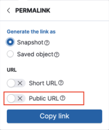
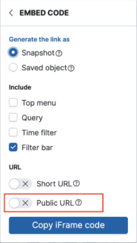

Reporting and sharing
editKibana provides you with several options to share Discover saved searches, dashboards, Visualize Library visualizations, and Canvas workpads.
You access the options from the Share menu in the toolbar. The sharing options include the following:
- PDF Reports — Generate and download PDF files of dashboards, visualizations, and Canvas workpads. PDF reports are a subscription feature.
- PNG Reports — Generate and download PNG files of dashboards and visualizations. PNG reports are a subscription feature.
- CSV Reports — Generate CSV reports of saved searches. Certain limitations apply.
- CSV Download — Generate and download CSV files of Lens visualizations.
- Get links — Share direct links to saved searches, dashboards, and visualizations.
- Download as JSON — Generate and download JSON files of Canvas workpads.
- [beta] This functionality is in beta and is subject to change. The design and code is less mature than official GA features and is being provided as-is with no warranties. Beta features are not subject to the support SLA of official GA features. Share on a website — Download and securely share Canvas workpads on any website.
- Embed code — Embed fully interactive dashboards as an iframe on web pages.
For Elastic Cloud deployments, Kibana instances require a minimum of 2GB RAM to generate PDF or PNG reports. To change Kibana sizing, edit the deployment.
For more information on how to configure reporting in Kibana, refer to Configure reporting in Kibana
Create reports
editCreate and download PDF, PNG, or CSV reports of saved searches, dashboards, visualizations, and workpads.
The layout and size of the report depends on what you are sharing. For saved searches, dashboards, and visualizations, the layout depends on the size of the panels. For workpads, the layout depends on the size of the worksheet dimensions.
To change the output size, change the size of the browser, which resizes the shareable container before the report generates. It might take some trial and error before you’re satisfied.
In the following dashboard, the shareable container is highlighted:
- Open the main menu, then open the saved search, dashboard, visualization, or workpad you want to share.
-
From the toolbar, click Share, then select the report option.
-
If you are creating dashboard PDFs, select Optimize for printing to create printer-friendly PDFs with multiple A4 portrait pages and two visualizations per page.
When you create a dashboard report that includes a data table or saved search, the PDF includes only the visible data.
- If you are creating workpad PDFs, select Full page layout to create PDFs without margins that surround the workpad.
-
- Generate the report.
- When the report generates, a message appears. On the message, click Download report.
- To view and manage reports, open the main menu, then click Stack Management > Reporting.
In "stateful" deployments, reports are stored in Elasticsearch and managed by the kibana-reporting index lifecycle management
(ILM) policy. By default, the policy stores reports forever. To learn more about ILM policies, refer
to the Elasticsearch ILM documentation.
CSV report limitations
editWe recommend using CSV reports to export moderate amounts of data only. The feature enables analysis of data in external tools, but it is not intended for bulk export or to backup Elasticsearch data. Report timeout and incomplete data issues are likely if you are exporting data where:
- More than 250 MB of data is being exported
- Data is stored on slow storage tiers
- Any shard needed for the search is unavailable
- Network latency between nodes is high
- Cross-cluster search is used
- ES|QL is used and result row count exceeds the limits of ES|QL queries
To work around the limitations, use filters to create multiple smaller reports, or extract the data you need directly with the Elasticsearch APIs.
For more information on using Elasticsearch APIs directly, see Scroll API, Point in time API, ES|QL or SQL with CSV response data format. We recommend that you use an official Elastic language client: details for each programming language library that Elastic provides are in the Elasticsearch Client documentation.
Reporting parameters can be adjusted to overcome some of these limiting scenarios. Results are dependent on data size, availability, and latency factors and are not guaranteed.
PNG/PDF report limitations
editWe recommend using PNG/PDF reports to export moderate amounts of data only. The feature enables a high-level export capability, but it’s not intended for bulk export. If you need to export several pages of image data, consider using multiple report jobs to export a small number of pages at a time. If the screenshot of exported dashboard contains a large number of pixels, consider splitting the large dashboard into smaller artifacts to use less memory and CPU resources.
For the most reliable configuration of PDF/PNG reporting features, consider installing Kibana using Docker or using Elastic Cloud.
Share direct links
editCreate and share direct links to saved searches, dashboards, and visualizations. To access the shared object, authentication is required.
- Open the main menu, then open the saved search, dashboard, or visualization you want to share.
- From the toolbar, click Share, then select Get links.
-
Specify how you want to generate the link:
- To display only the current state of the object, select Snapshot.
- To display up-to-date changes, select Saved object.
- To generate a shortened link, select Short URL.
-
To automatically log in anonymous users when you have multiple authentication providers enabled, select Public URL.
Public URL is available only when anonymous access is configured and your anonymous service account has privileges to access what you want to share. For more information, refer to Anonymous authentication.
- Click Copy link.
Create JSON files
editCreate and share JSON files for workpads.
- Open the main menu, then click Canvas.
- Open the workpad you want to share.
- From the toolbar, click Share, then select Download as JSON.
Share workpads on a website
edit[beta] This functionality is in beta and is subject to change. The design and code is less mature than official GA features and is being provided as-is with no warranties. Beta features are not subject to the support SLA of official GA features. Create and securely share static Canvas workpads on a website. To customize the behavior of the workpad on your website, you can choose to autoplay the pages or hide the workpad toolbar.
- Open the main menu, then click Canvas.
- Open the workpad you want to share.
- Click Share > Share on a website.
-
To customize the workpad behavior to autoplay the pages or hide the toolbar, use the inline parameters.
To make sure that your data remains secure, the data in the JSON file is not connected to Kibana. Canvas does not display elements that manipulate the data on the workpad.
Shareable workpads encode the current state of the workpad in a JSON file. When you make changes to the workpad, the changes do not appear in the shareable workpad on your website.
- To change the settings, click the settings icon, then choose the settings you want to use.
Embed code
editDisplay your dashboards on an internal company website or personal web page with an iframe. To embed other Kibana objects, manually create the HTML code.
For information about granting access to embedded dashboards, refer to Authentication.
- Open the main menu, then open the dashboard you want to share.
- Click Share > Embed code.
-
Specify how you want to generate the code:
- To display the current state, select Snapshot.
- To display up-to-date changes, select Saved object.
- Select the dashboard components you want to share.
- To generate a shortened link, select Short URL.
-
To automatically log in anonymous users when you have multiple authentication providers enabled, select Public URL.
Public URL is available only when anonymous access is configured and your anonymous service account has privileges to access what you want to embed. For more information, refer to Anonymous authentication.
- Click Copy iFrame code.